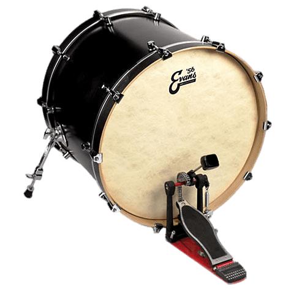
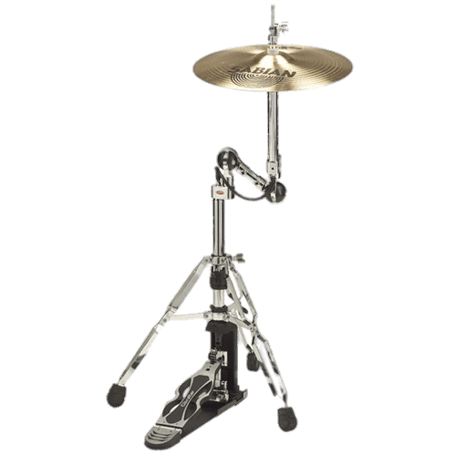

Les elements de la batterie
L'histoire
Quelque performances
Contact
La caisse claire est l'element principal sur une batterie normal.
La caisse claire possède un son très distinct, qui est l’une des fondations de la musique au sens large. Elle peut être fabriquée en bois, en métal, ou même encore en titane.
Si vous demandez à n’importe quel batteur s’il devait choisir un seul élément pour travailler son jeu à la batterie, la réponse sera la caisse claire.
Elle permet de travailler tous les rudiments à tous les tempos, réagit parfaitement aux rebonds, aux intensités ainsi qu’à la précision de votre frappe.
C'est aussi un element que l'on retrouve dans les fanfares ou les defilés telle que le 14 juillet.

Tous les éléments de la batterie s’articulent autour de la grosse caisse. C’est l’élément le plus imposant, et celui qui produit le son le plus marquant.
La grosse caisse est à la base du rythme à la batterie. Elle sert de point de repère au reste du groupe, et permet de marquer la chanson en tandem avec le bassiste.
Il est possible de frapper la grosse caisse avec une ou deux pédales de grosse caisse, selon le style de musique. Une double pédale de grosse caisse, souvent utilisée dans le métal, permet de créer un véritable rouleau compresseur.
Les cymbales charleston fonctionnent toujours par paire, l’une au dessus de l’autre. Elles sont alignées sur un pied de cymbale, et peuvent être contrôlées par le pied du batteur.
En effet, les pédales de charleston peuvent s’ouvrir et se fermer à différents niveaux, ce qui permet une palette de sons très large.
Les cymbales charleston sont très souvent utilisées pour marquer le tempo, et sont aussi à la base du rythme à la batterie. Couplées à la caisse claire, les cymbales charleston sont les principaux éléments utilisés avec des baguettes par le batteur.
Les toms sont des tambours implémentés dans le kit de batterie. Ils sont aussi de différentes tailles, et leur nombre ainsi que leur positionnement peuvent changer.
Très souvent, une batterie comporte au minimum deux toms : un tom basse, et un tom aigu. Il n’est pas rare de trouver un troisième tom, le tom “middle”.
Tout dépend de la palette de sons que vous désirez : chaque tom produit un son différent, et c’est en les combinant entre eux et avec d’autres éléments de batterie que leur potentiel se dévoile.
Il en existe de différentes sortes et de différentes tailles, je parle bien sur des cymbales.
La plus large, c’est la cymbale ride. Elle peut, à l’image des cymbales charleston, elle aussi être à la base du rythme et marquer le tempo. Elle est aussi composée d’un dôme en son centre : le frapper produit un son semblable à celui d’une cloche.
Les cymbales Crash existent en de nombreuses tailles et déclinaisons.
Elles servent principalement à accentuer des changements de mesure, et permettent de dynamiser et donner de la puissance à votre jeu à la batterie.